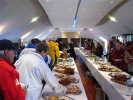
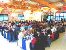

Berck (réd. 30 avril. 2009)
Berck (réd. 30 avril. 2009)Un festival plus tardif donc moins froid et volable tous les jours...
Une organisation difficile vu le volume de 9 jours, mais efficace !
Des cerfs-volants importants de beaucoup de pays, une grande année...

Châtelaillon (réd. 14 avril. 2009)La plage, un temps honnête par rapport au reste de la France, du vent...
Une restauration sophistiquée à Beauséjour et au Casino !
Un accueil sympathique, même si Michel et Madeleine ont passé la main...

Coulaines (réd. 7 avril. 2009)Premier Festival 2009 outdoor en France...
Toujours un accueil fantastique et un (des) terrain(s) agréable(s) !
Météo pas trop bonne, humide et calme, mais pas froide.
 Indoor de Dieppe (réd. 10 fév. 2009)
Indoor de Dieppe (réd. 10 fév. 2009)Indoor dans la bien connue ville du festival mondial...
Beaucoup de travail de préparation de l'équipe et des idées nouvelles !
Et même du public le dimanche après-midi...
 Indoor de Grande-Synthe (réd. 26 jan. 2009)
Indoor de Grande-Synthe (réd. 26 jan. 2009)Premier indoor de l'année, une salle magnifique et très vaste !
Un accueil chaleureux, mais un match de Coupe concurrent!
Une ambiance sympathique comme on s'y attend dans le Nord...
 Mots Croisés 7 (réd. 18 nov. 2008)
Mots Croisés 7 (réd. 18 nov. 2008)Un nouveau Mots Croisés qui parle un peu de cerf-volant...
Pour passer l'automne au coin du feu...
Et un changement par rapport à l'indoor...
Novembre 2007 : Passé les reportages 2007 sur mon site free, sans changement pour le lecteur.
Novembre 2006 : Remis les reportages 2004. Ils sont maintenant hébergés, avec ceux de 2005 et 2006, sur un site free.
Juillet 2006 : Supprimé les reportages 2004 et un peu de 2005 pour gagner de la place, accessibles sur demande.
Février 2006 : Incorporation d'une rubrique de Mots Croisés cervolistiques.
Janvier 2006 : Modification globale du site avec une rubrique Techniques et Plans qui reprend certaines parties existantes mais ajoute pas mal de pages.
Février 2005 : Ajout d'un plan du site avec liens vers toutes les pages. Plan accessible avec "P", le dernier bouton à droite du menu. Insertion d'un traducteur anglais couvrant tout le site.
Janvier 2005 : Utilisation de scripts et de styles généraux de type HTML4 et CSS sur tout le site (Validé W3C).
Décembre 2004 : Mise en facteur du script d'ouverture des grandes photos, et changement de look des boutons (utilisation de styles HTML4).
Novembre 2004 : Apparition de quelques pages traduites en anglais avec quelques boutons dédiés supplémentaires. (Some english pages appear...).
9 août 04 : Gestion des photos agrandies : elles ne disparaissent plus automatiquement quand on revient à la page initiale (permet de charger une grande photo à petite vitesse pendant qu'on revient lire la page).
15 juin 2004 : Tous les plans sont maintenant agrandissables.
28 mars 2004 : Gestion des photos agrandies ; ajout page de sous-accueil "Fêtes et Reportages".
| Merci de me signaler tout problème : |